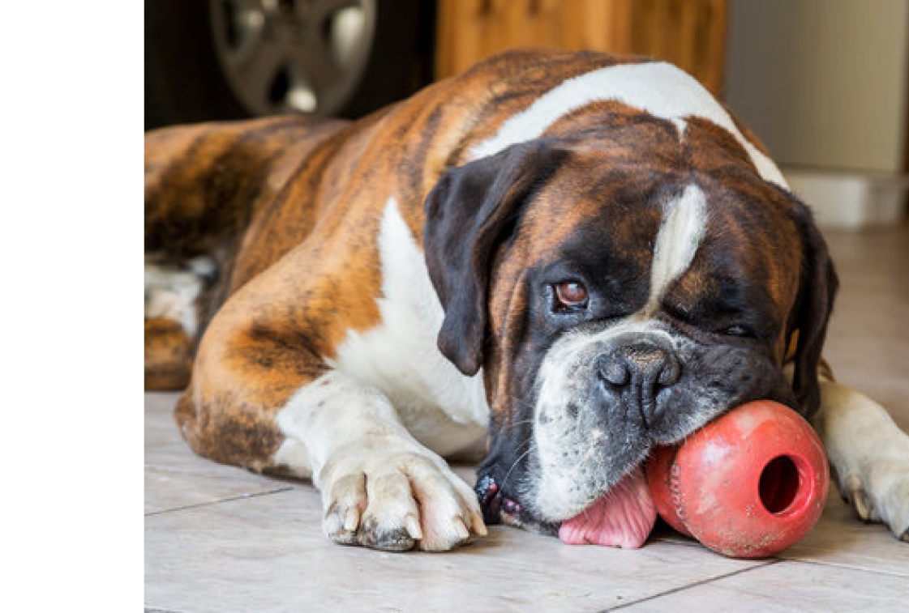

Re-Homing
Thank you for contacting Austin Boxer Rescue. If you have a stray dog, you will need to go to the local shelter and give the owners a chance to reclaim.
Before You Re-Home
If you are seeking emergency intake for your dog, email us at: info@austinboxerrescue.com and call the volunteer line at (512) 968-1343.
Please give detailed information about your dog and where your dog is presently located (shelter, Vet, home etc). We will also need photos of your dog, your Vet’s contact information and a completed Owner Surrender Form prior to accepting the dog into rescue.
Complete the online Owner Surrender Form
Submit recent photos
contact your Veterinarian and gather all records
Adoption Day
Austin Boxer Rescue hosts an Adoption Day Event every other weekend in Austin and the second Saturday of each month in San Antonio. Information about the event is located on the banner to the right. You are required to bring your dog to at least one of these events each month.
Frequent attendance will give your dog additional exposure and increase the chances of a speedy adoption.